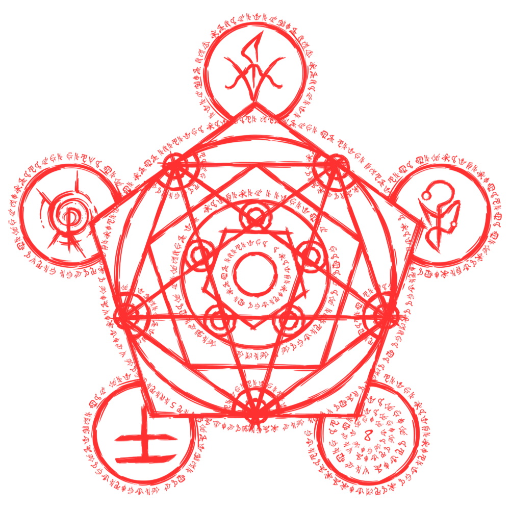

ENTIDADES
Além do mundo em que vivemos, a Realidade, existe uma outra dimensão. Um lugar impossível, que já foi conhecido através da história por muitos nomes, mas hoje é chamado simplesmente de “Outro Lado”. O Outro Lado é uma dimensão misteriosa e perversa, que desafia a lógica e a sanidade. Habitado por seres conhecidos como entidades - também chamados de “elementos” - essa dimensão é separado da Realidade por uma barreira invisível chamada MEMBRANA. Apesar de forte, a Membrana pode ser danificada, possibilitando que entidades invadam a Realidade, onde são percebidas como manifestações paranormais.
É impossível, para alguém dentro da Realidade, entender completamente o Outro Lado, Porém ao longo dos anos observando manifestações paranormais foi possível determinar algumas constantes. Até onde se descobriu, o Outro Lado é dividido em cinco elementos, entidades que se manifestam dentro da Realidade através de eventos paranormais. Estas são nomeadas Sangue, Morte, Conhecimento, Energia e Medo cada uma parecendo ter objetivos e vontades próprias.
Todas as manifestações de um mesmo elemento estão relacionadas e por isso agem de maneira similar. Por esse motivo, manifestações do mesmo elemento não agem com eficiência umas contra as outras. Um ritual que causa dano de Energia é pouco eficaz contra uma criatura de Energia, já que isso implica na entidade agredindo a si mesma. Porém, isso não significa que criaturas são diretamente ligadas entre sí, cada uma é isolada pelo Medo das leis lógicas que tentam corromper.
O OUTRO LADO NÃO PODE SER COMPREENDIDO PELA MENTE HUMANA. NUNCA ESQUEÇA ISSO
ELEMENTOS OPRESSORES
É perceptível que as entidades do Outro Lado têm algum tipo de relação hostil entre si. Devido à natureza do comportamento e vontade de cada uma das entidades, cada elemento é especialmente eficaz contra outro elemento específico.
Porém ser eficaz contra uma entidade não torna esse elemento resistente a ela — os elementos são resistentes apenas a si mesmos.
Nessa relação, uma entidade que tem vantagem em relação à outra é nomeada “elemento opressor”. Por exemplo, a Morte é o elemento opressor do Sangue — ou seja, rituais de Morte têm vantagem contra criaturas de Sangue, mas criaturas de Morte não têm vantagem ao sofrerem rituais de Sangue. Entidades opressoras e oprimidas são especialmente egressivas entre sí e sempre buscam se destruir.
Em termos de jogo, criaturas sofrem o dobro de dano e tem –2d20 em testes contra efeitos do seu elemento opressor. No entanto, recebem +2d20 em testes contra efeitos do seu elemento.
AFINIDADE ELEMENTAL
Quando atinge NEX 50%. existe tanto do Outro Lado em você quanto da Realidade. Por isso você se conecta com um elemento a sua escolha entre Conhecimento, Energia, Morte e Sangue — é impossível ter afinidade com Medo. Na primeira vez que transcender após isso, irá desenvolver afinidade com o elemento escolhido. Afinidade resulta em alterações de personalidade e aparência e também dá os seguintes benefícios:
- Você não precisa mais de componentes ritualísticos para conjurar rituais do elemento com o qual tem afinidade. Além disso, pode aprender rituais que exijam afinidade com esse elemento.
- Você recebe +2d20 em testes contra efeitos do seu elemento. No entanto, sofre –2d20 em testes contra efeitos do elemento opressor ao seu.
- Você pode escolher poderes paranormais do seu elemento uma segunda vez para receber o benefício listado na linha “Afinidade”.
CONHEÇA AS ENTIDADES
CLIQUE NO SIMBOLO
MANIFESTAÇÕES PARANORMAIS
Ao ultrapassar a Membrana, as entidades precisam se submeter às leis que definem a Realidade, sendo moldadas aos conceitos e ideias que enfraqueceram a Membrana em primeiro lugar. Porém, nesse processo, as entidades também lutam de volta, distorcendo as regras às quais estão sendo impostas. Por causa disso, as manifestações podem tomar várias formas: se invocadas propositalmente através de um ritual, as entidades alteram apenas pontos específicos da Realidade comunicados por um conjurador através de um símbolo
RELÍQUIAS DA CALAMIDADE
Existem ocultistas que teorizam sobre a existência das “Relíquias” — as origens primordiais de Medo que mantêm o paranormal ativo em todo o mundo, impedindo que o Outro Lado seja separado permanentemente da Realidade.